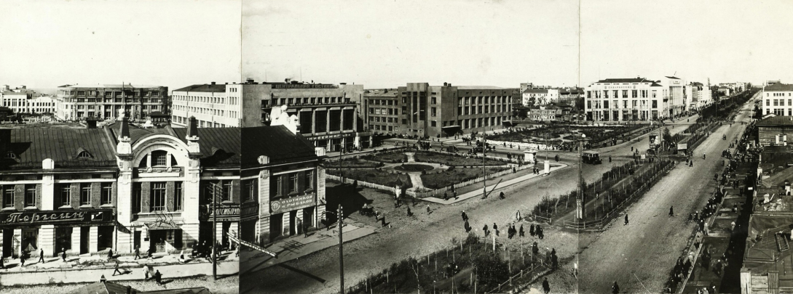
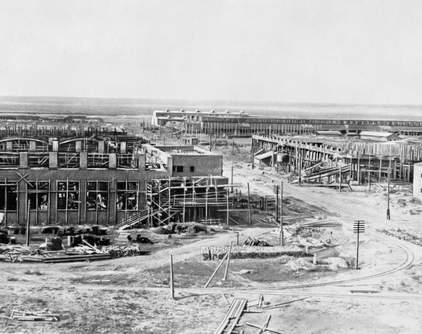
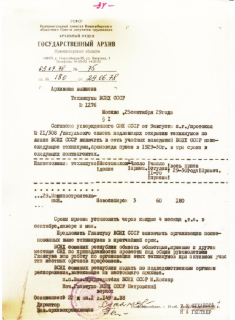
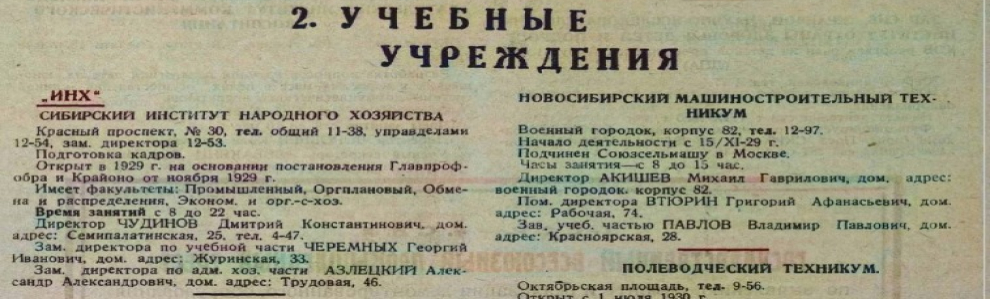
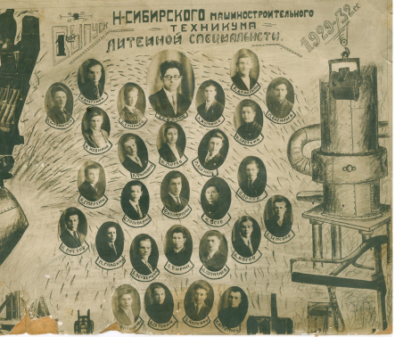
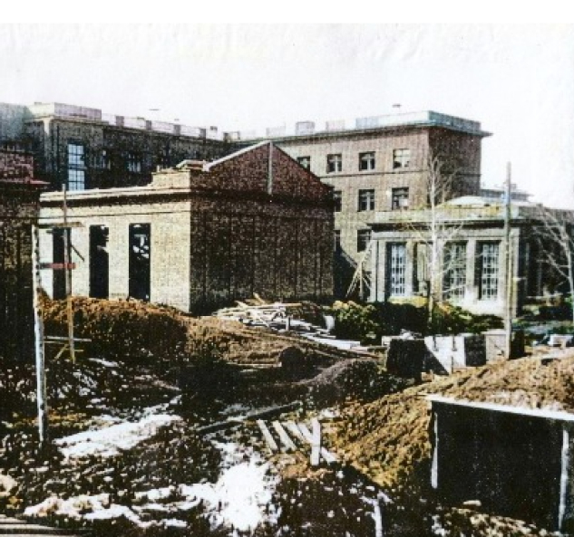

Первые годы
История колледжа-
это зеркало становления Новосибирска, как одного из крупнейших промышленных центров нашей страны

Новосибирск, 1933 г
В годы реализации первого пятилетнего плана развития СССР страна совершила промышленную революцию,
превращаясь из аграрной в индустриальную. А вместе с ней и Новосибирск превратился в грандиозную
«стройку века».
Здесь создавались крупные предприятия машиностроения
- завод горного оборудования (будущий Новосибирский авиационный завод имени В.П. Чкалова)
- будущий «Сибсельмаш»

Строительство завода Сибкомбайн, 1930 год
Строящиеся промышленные предприятия Новосибирска нужно было обеспечивать кадрами. 1929 год стал годом основания для многих профессиональных учебных заведений среднего и высшего образования города. Приказом правительства СССР – Высшего Совета народного хозяйства от 25 сентября 1929 г №1276 – был образован «Новосибирский машиностроительный техникум».
Первоначально техникум был подчинен «Союзсельмашу» в Москве. Первым директором стал Акишев Михаил Гаврилович. Так началась история Новосибирского авиационного технического колледжа имени Б.С. Галущака.


Первый директор техникума -Акишев Михаил Гаврилович
Архивная выписка приказа об открытии Новосибирского машиностроительного
техникума
Свою деятельность техникум начал 15 ноября 1929 года. В справочнике «Весь Новосибирск» за 1931 год первым адресом учебного заведения значится Военный городок, корпус 82 (Октябрьский район).

Справочная книга «Весь Новосибирск», 1931 г., стр.62
С 20 февраля 1931 г. техникума переименован в «Новосибирский техникум сельскохозяйственных машин», а с 8 апреля 1933 года – в «Новосибирский техникум машиностроения». Здесь готовили специалистов по инструментальному производству, литейному производству и холодной обработке металлов резанием.

Здание ФЗУ, в котором располагался техникум в начале 1930-х годов

Соцгородок завода «Сибкомбайн» в начале 1930-х годов
С 20 февраля 1931 г. техникума переименован в «Новосибирский техникум сельскохозяйственных машин», а с 8 апреля 1933 года – в «Новосибирский техникум машиностроения». Здесь готовили специалистов по инструментальному производству, литейному производству и холодной обработке металлов резанием.
.jpg)
Первые выпускники техникума 1932 года

Первые выпускники литейной специальности
Строительство колледжа на Красном проспекте
Название «авиационный» техникум приобрел в январе 1937 года с передачей в ведение Глававиапрома и Наркомата оборонной промышленности. К этому времени завод горного оборудования был переориентирован на производство самолетов и остро нуждался в квалифицированных рабочих, техниках, инженерах. Для учебного заведения начинается строительство собственного здания на Красном проспекте: 1 мая 1938 года был заложен первый камень фундамента.

Строительство здания техникума на Красном проспекте